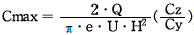
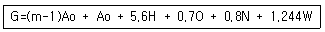
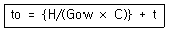
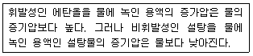
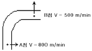
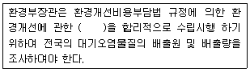

대기환경기사 (2006-09-10 기출문제)
1과목: 대기오염 개론
1. 확산계수 Cy= Cz= 0.⑤, 풍속(U)= 4m/sec, 굴뚝의 유효고는 150m, 오염물질의 배출률(Q)= 50000Sm3/hr이고, 가스중 SO2 농도가 2000ppm이라고 할 때 지상에 나타나는 SO2의 최대농도는 몇 ppm인가? (단, Sutton의 확산식이용

)(오류 신고가 접수된 문제입니다. 반드시 정답과 해설을 확인하시기 바랍니다.)- 약 0.010ppm
- 약 0.027ppm
- 약 0.035ppm
- 약 0.072ppm
(정답률: 알수없음)
2. 광화학옥시던트 중 PAN에 관한 설명으로 옳은 것은?
- 푸른색, 해초냄새를 갖는 기체로서 대기중에서 광산화제로 작용한다.
- 분자식은 CH3COOONO2 이다.
- 눈에는 자극이 없으나 호흡기 점막에는 강한 자극을 준다.
- PBzN 보다 100배 정도 강하게 눈을 자극한다.
(정답률: 알수없음)

3. 다음 보기의 온실기체 중 온실효과에 대한 기여도(%)가 가장 낮은 대기물질은?
- 메탄
- CO2
- N2O
- CFC 11 & 12
(정답률: 알수없음)
4. 바람과 관련된 내용으로 틀린 것은?
- 경도력: 기압차에 비례하고 등압선의 간격에 반비례한다.
- 전향력: 지구 자전에 의해 운동하는 물체에 작용하는 힘이며 경도력과 반대방향이다.
- 지균풍: 자유대기층에서 기압경도력과 전향력만으로 등압선과 평행하게 직선운동을 하며 부는 바람이다.
- 경도풍: 북반구에서는 고기압 중심부에서 아래로 침강하면서 시계반대방향(외향)으로 불어나간다.
(정답률: 알수없음)
5. 최근 대기오염 물질의 장거리 이동에 대한 많은 보고가 나오고 있어 대기오염 물질의 제어는 한 지역의 문제가 아니라 전 지구적인 감시와 조절이 절실히 요구되어지고 있다. 특히 매년 증가하고 있어 많은 문제를 안고있는 CO2의 순환과정을 설명한 다음 내용 중 틀린 것은?
- 대기중의 CO2농도는 여름에 감소하고 겨울에 증가한다.
- 지구의 북반구 대기중의 CO2농도가 남반구보다 높다.
- 대기중의 CO2는 바다에 많은 양이 흡수되나 식물에 의한 흡수량보다는 적다.
- 대기중의 자연농도는 350ppm 정도이며, 체류시간은 대체로 2-4년이다.
(정답률: 알수없음)
6. 최대혼합고도를 400m로 예상하여 오염농도를 3ppm으로 추정하였는데, 실제 관측된 최대 혼합고도는 200m였다. 실제 나타날 오염농도는? (단, 기타 조건은 같음)
- 21ppm
- 24ppm
- 27ppm
- 29ppm
(정답률: 알수없음)
7. 유명한 대기오염사건들과 발생국가의 연결이 틀린 것은?
- LA스모그 사건 - 미국
- 뮤즈계곡 사건 - 프랑스
- 도노라 사건 - 미국
- 포자리카 사건 - 멕시코
(정답률: 알수없음)
8. 대기의 수직구조에 관한 설명으로 가장 알맞은 것은?
- 구름이 끼고 비가 내리는 등의 기상현상은 대류권에 국한되어 나타나는 현상이다.
- 대류권은 지상으로부터 약 20-30km 정도의 범위를 말한다.
- 대류권의 높이는 여름보다 겨울이 높다.
- 대류권의 높이는 고위도 지방보다 저위도 지방이 낮다.
(정답률: 알수없음)
9. 굴뚝에서 배출되는 연기의 모양이 Fanning형인 경우, 대기에 관한 설명으로 틀린 것은?
- 대기가 매우 안정한 침강역전상태일 때 주로 발생한다.
- 기온역전상태의 대기오염이 심할 때 나타날 수 있는 연기모양이다.
- 연기의 수직방향 분산은 최소가 된다.
- 일반적으로 최대 착지거리가 크고, 최대 착지농도는 낮다.
(정답률: 알수없음)
10. 아황산가스를 배출하는 오염지역 주위에 심어도 비교적 잘 자랄 수 있는 식물은?
- 육송
- 양배추
- 알팔파
- 담배
(정답률: 알수없음)
11. 다음 중 가우시안(Gaussian) 확산모델 유도에 사용되는 가정과 가장 거리가 먼 것은?
- 연기의 확산은 정상상태(Steady state)로 가정한다.
- 풍속은 고도에 따라서 증가하므로 이를 모델에서 고려하기 위해서 power law를 적용한다.
- 오염물질은 점배출원으로부터 연속적으로 방출된다.
- 바람에 의한 주 이동방향은 X축으로 하며 오염물질은 플륨(plume)내에서 소멸되거나 생성되지 않는다.
(정답률: 알수없음)
12. 다음은 질소산화물(NOx)에 관한 설명이다. 틀린 것은?
- NOx의 인위적 배출량 중 거의 대부분이 연소과정에서 발생된다.
- NOx는 그 자체도 인체에 해롭지만 광화학스모그의 원인물질로도 중요한 역할을 한다.
- 연소과정에서 처음 발생되는 NOx는 주로 NO이다.
- 연소시 연료중 질소의 NO변환율은 대체로 약 2-5%범위이다.
(정답률: 알수없음)
13. 유효굴뚝 높이 100m의 굴뚝으로부터 배출되는 아황산가스가 지상 최고농도를 나타내는 지점은? (단, Cz= 0.07, 대기안정도 계수 n= 0.25, Sutton식 적용)
- 약 4000m
- 약 5000m
- 약 6000m
- 약 7000m
(정답률: 알수없음)
14. 라돈에 관한 설명으로 틀린 것은?
- 주기율표 3족에 속하며, 화학적으로 반응성이 크다.
- 상온에서 기체로 존재하며 공기보다 9배 정도 무겁다.
- 무색, 무취이며 액화되어도 색을 띠지 않는다.
- 폐암을 유발하는 물질로 알려져 있다.
(정답률: 알수없음)
15. 표준상태에서 SO2농도가 1.0g/m3이라면 몇 ppm인가?
- 250
- 350
- 450
- 550
(정답률: 알수없음)
16. 오존에 대한 설명중 틀린 것은? (단, 대류권내 오존 기준)
- 국지적인 광화학스모그로 생성된 Oxidant의 지표물질이다.
- 오존은 태양빛, 자동차 배출원인 질소산화물과 휘발성 유기화합물 등에 의해 일어나는 복잡한 광화학반응으로 생성된다.
- 오염된 대기 중에서 오존농도에 영향을 주는 것은 태양빛의 강도, NO2/NO의 비, 반응성탄화수소농도 등이다.
- 보통 지표오존의 배경농도는 0.1-0.2ppm범위이다.
(정답률: 알수없음)
17. 다음 중 1차 대기오염물질이 아닌 것은?
- SO2
- HC
- NaCl
- H2O2
(정답률: 알수없음)
18. 다음 중 가장 높은 압력을 나타내는 것은?
- 76 torr
- 76 kPa
- 15 psi
- 1000 mbar
(정답률: 알수없음)
19. 다음 중 불화수소(HF)의 배출업종을 가장 알맞게 짝지은 것은?
- 가스공업, 펄프공업
- 도금공업, 플라스틱공업
- 염료공업, 냉동공업
- 화학비료공업, 알루미늄공업
(정답률: 알수없음)
20. 다이옥신에 관한 설명으로 알맞지 않은 것은?
- 고온에서 완전연소시켜 제거되고 재생성의 위험은 없으나 처리비용이 과다하다.
- PCB의 부분산화 또는 불완전연소에 의하여 발생한다.
- 살충제, 제초제 등의 농업 및 산업 화학물질의 부산물에서 발생한다.
- 두 개의 산소교량으로 2개의 벤젠고리가 연결된 일련의 유기염화물이다.
(정답률: 알수없음)
2과목: 연소공학
21. 3.0%의 황을 함유하는 중유를 매시 4000kg 연소할 때 생기는 황산화물(SO2)의 이론량(Sm3/hr)은?
- 76
- 84
- 92
- 1⑤
(정답률: 59%)
22. 중유의 조성을 조사하였더니 탄소 85%, 수소 12%, 황 2%로 구성되어 있었다. 이를 완전 연소시키기 위한 이론 공기량은? (단, 중량% 기준)
- 7.41 Sm3/kg
- 8.86 Sm3/kg
- 9.23 Sm3/kg
- 10.91 Sm3/kg
(정답률: 64%)
23. 석탄의 탄화도가 증가하면 감소하는 것은?
- 비열
- 고정탄소
- 발열량
- 착화온도
(정답률: 40%)
24. 부탄(C4H10)몇 kg을 완전연소하면 이론적 필요한 공기량이 500kg-air가 되겠는가?
- 약 32kg
- 약 42kg
- 약 52kg
- 약 62kg
(정답률: 알수없음)
25. 공기를 사용하여 C3H8을 완전연소시킬 때 건조가스 중의 CO2max(%)는?
- 13.76%
- 14.76%
- 15.25%
- 16.85%
(정답률: 알수없음)
26. 유류버너 중 회전식버너에 관한 설명으로 틀린 것은?
- 연료유의 점도가 작을수록 분무화 입경이 작아진다.
- 분무는 기계적 원심력과 공기를 이용한다.
- 유압식버너에 비하여 연료유의 분무화 입경이 1/10이하로 매우 작다.
- 분무각도는 40°-80°정도로 크며, 유량조절범위도 1:5정도로 비교적 큰 편이다.
(정답률: 알수없음)
27. 다음 수식은 무엇을 산출하기 위한 식인가?

- 기체연료의 실제습연소가스량(Sm3/Sm3)
- 고체 및 액체연료의 실제습연소가스량(Sm3/kg)
- 기체연료의 실제건연소가스량(Sm3/Sm3)
- 고체 및 액체연료의 실제건연소가스량(Sm3/kg)
(정답률: 알수없음)
28. 착화온도에 관한 사항들 중 옳지 않은 것은?
- 활성화에너지가 클수록 낮아진다.
- 화학결합의 활성도가 클수록 낮아진다.
- 대체로 탄화수소의 분자량이 클수록 낮아진다.
- 동질성의 물질에서 발열량이 클수록 낮아진다.
(정답률: 알수없음)
29. 어떤 석탄을 공업한 결과 휘발분이 34wt%, 수분이 4wt%, 그리고 고정탄소가 62wt%이었다. 석탄의 연료비는?
- 1.82
- 1.61
- 1.43
- 1.32
(정답률: 알수없음)
30. 수소 12(w/w)%. 수분 0.6(w/w)%인 중유의 고위발열량이 1⑤00kcal/kg일 때 이 중유의 저위발열량은? (단, 중유 비중은 1.0으로 가정함)
- 9937 kcal/kg
- 9848 kcal/kg
- 9720 kcal/kg
- 9630 kcal/kg
(정답률: 알수없음)
31. 중유를 분석하였더니 C: 83%, H: 12%, O: 0.8%, S: 1.8%, N: 0.4%, 수분: 2% 이었다. 1kg을 연소할 때 연소효율이 70%라 하면 저위발열량(kcal/kg)은?
- 약 15100
- 약 12100
- 약 7100
- 약 4100
(정답률: 알수없음)
32. 수소 3Sm3의 이론 연소공기량은 대략 얼마인가?
- 약 4.7Sm3
- 약 7.1Sm3
- 약 9.4Sm3
- 약 11.6Sm3
(정답률: 알수없음)
33. 메탄(CH4) 3.0Sm3을 완전연소시킬 때 발생되는 이론습연소가스량(Sm3)은?
- 약 4.7 Sm3
- 약 7.1 Sm3
- 약 9.4 Sm3
- 약 11.6 Sm3
(정답률: 알수없음)
34. 다음의 연소온도(to)산출 식에서 각각의 물리적 변수에 대한 설명으로 옳지 않는 것은?

- H는 연료의 저위발열량을 의미하며, 단위는 kcal/kg 또는 kcal/Sm3이다.
- Gow는 이론 건연소가스량을 의미하며, 단위는 Sm3/kg 또는 Sm3/Sm3이다.
- C는 연소가스의 평균정압비열을 의미하며, 단위는 kcal/Sm3ㆍ℃이다.
- t는 연소용 공기 및 연료의 공급온도를 의미하며 단위는 ℃이다.
(정답률: 알수없음)
35. 배기가스중에 일산화탄소가 전혀 없는 완전연소가 일어나고, 이 때 공기비가 2.0이라면 배기가스중의 산소량(O2)은 몇 %인가?
- 7.5%
- 9.5%
- 10.5%
- 12.5%
(정답률: 알수없음)
36. 기체연료의 연소방식 중 확산연소에 관한 설명과 가장 거리가 먼 것은?
- 화염이 길다.
- 연료분출속도가 클 경우, 그을음이 발생하기 쉽다.
- 역화의 위험이 있다.
- 기체연료와 연소용 공기를 버너 내에서 혼합시키지 않는다.
(정답률: 알수없음)
37. COM에 대한 설명 중 틀린 것은?
- Coal Oil Mixture을 말한다.
- 볼밀 등을 사용하여 기름 중에서 석탄을 분쇄ㆍ혼합하여 제조한다.
- 미분탄의 침강을 막기 위해 계면활성제를 사용한다.
- 중유전용 보일러를 개조 없이 활용할 수 있어 사용범위가 넓다.
(정답률: 알수없음)
38. 다음에 열거한 연료중에서 착화온도가 가장 높은 것은?
- 갈탄(건조)
- 중유
- 역청탄
- 메탄
(정답률: 알수없음)
39. 중유를 완전연소한 결과 실제 습연소가스량은 15.4Sm3/kg이었다. 이 때 이론공기량이 11.5Sm3/kg이고, 이론습연소 가스량이 13.1Sm3/kg이엇다면 공기비는?
- 1.2
- 1.3
- 1.4
- 1.5
(정답률: 알수없음)
40. C8H18 4kg을 완전연소 시키기 위하여 소요되는 이론적인 공기량은? (단, 공기의 분자량은 28.95)
- 약 60kg
- 약 75kg
- 약 80kg
- 약 95kg
(정답률: 알수없음)
3과목: 대기오염 방지기술
41. 싸이클론의 집진효율에 관한 설명으로 틀린 것은?
- 원통의 직경이 클수록 효율은 증가한다.
- Blow down효과를 적용하여 효율을 증대시킨다.
- 입자의 입경과 밀도가 클수록 효율은 증가한다.
- 입구유속이 빠를수록 효율이 높은 반면에 압력손실도 높아진다.
(정답률: 59%)
42. 유해가스의 흡수이론에 대한 설명 중 잘못된 것은?
- 흡수는 기체상태의 오염물질을 흡수액을 사용하여 흡수제거시키는 것으로 세정이라고도 한다.
- 흡수조작에 사용되는 흡수제는 물 또는 수용액을 주로 사용한다.
- 배출가스의 용매에 대한 용해도가 큰 기체인 경우에 헨리의 법칙이 적용될 수 있다.
- 용해에 따른 복잡한 화학반응이 일어날 경우에는 성립하지 않는다.
(정답률: 알수없음)
43. 어떤 집진장치에서 배출가스 유량이 200m3/min이고, 압력손실이 350mmH2O라고 할 때, 필요한 송풍기의 소요동력은? (단, 송풍기의 효율은 80%이다)
- 14.3kW
- 16.2kW
- 18.5kW
- 21.5kW
(정답률: 알수없음)
44. 다음의 [ ]안의 내용의 현상을 어떤 법칙이라고 하는가?

- 헨리(Henry)의 법칙
- 렌츠(Lentz)의 법칙
- 샤를(Charle)의 법칙
- 라울(Raoult)의 법칙
(정답률: 알수없음)
45. 전기집진장치 운전시 발생될 수 있는 역전리 현상의 원인과 가장 거리가 먼 것은?
- 입구의 유속이 클 때
- 미분탄 연소시
- 배가스의 점성이 클 때
- 분진 비저항이 너무 클 때
(정답률: 알수없음)
46. 95% 총 집진효율을 얻기 위해 30% 효율을 가진 전처리설비를 이미 설치하였다. 주 처리장치의 효율을 몇 %로 하여야 하는가?
- 80.9%
- 84.2%
- 92.9%
- 96.9%
(정답률: 알수없음)
47. Bag Filter에서 먼지부하가 360g/m2일 때마다 부착먼지를 간헐적으로 탈락시키고자 한다. 유입가스 중의 분진농도가 10g/m3이고, 겉보기 여과속도가 1cm/sec일 때 부착먼지의 탈락시간 간격은? (단, 집진율은 80%이다.)
- 약 0.4hr
- 약 1.3hr
- 약 2.4hr
- 약 3.6hr
(정답률: 알수없음)
48. 0.1㎛(micrometer)의 직경을 가진 구형 물입자(water droplet)하나에 포함되어 있는 물분자수는 몇 개인가?
- 약 1.75×107 개
- 약 2.55×107 개
- 약 3.65×107 개
- 약 4.25×107 개
(정답률: 알수없음)
49. 후드(Hood)의 형식과 선정방법에 대한 설명으로 틀린 것은?
- 유독한 오염물질의 발생원으로 포위할 수 있는 경우에는 포위식(Enclosure type)을 선택한다.
- 작업 또는 공정상 발생원을 전혀 포위할 수 없는 경우에는 부스식(Booth type)을 선택한다.
- 고열을 내는 발생원에서 열부력에 의한 상승기류나 회전체에 의한 관성기류와 같이 일정한 방향으로 오염기류가 발생하는 경우에는 리시버식(Receiving type)을 선택한다.
- 후드 개구의 바깥주변에 플랜지를 부착하면 오염물질의 제어에 필요하지 않은 후드 뒤쪽의 공기흡입을 방지할 수 있고, 그 결과 포착속도가 커지는 이점이 있다.
(정답률: 알수없음)
50. 면적이 250km2인 도시에서 지표면 근처의 분진농도가 100㎍/m3일 때 하루동안 침전하는 분진은 몇 ton인가? (단, 분진의 침강속도는 0.1cm/sec이고, 표준상태라 가정)
- 1.68
- 2.16
- 3.66
- 4.12
(정답률: 알수없음)
51. 먼지의 입경분포를 나타내는 Rosin-Rammler식(R)에서 β와 n에 대한 설명으로 알맞은 것은? [단, R= 100ㆍexp{-β(dp)n}(%). dp는 먼지의 입경. β와 n은 각각 입경계수와 입경지수이다.]
- β가 클수록 먼지의 입경이 미세하고, n이 클수록 입경분포범위가 좁다.
- β가 클수록 먼지의 입경이 크고, n이 클수록 입경분포범위가 좁다.
- β가 클수록 먼지의 입경이 미세하고, n이 클수록 입경분포범위가 넓다.
- β가 클수록 먼지의 입경이 크고, n이 클수록 입경분포범위가 넓다.
(정답률: 알수없음)
52. 전기집진장치의 분진 제거효율을 95%에서 99%로 증가시켰을 때, 집진극의 면적은 어떻게 변화되어야 하는가? (단, 나머지 조건은 일정하다고 가정함)
- 집진극 면적은 1.24배 증가
- 집진극 면적은 1.54배 증가
- 집진극 면적은 1.84배 증가
- 집진극 면적은 2.14배 증가
(정답률: 알수없음)
53. HCl의 농도가 부피비로 0.75%인 배출가스 2500m3/hr를 수산화칼슘(Ca(OH)2)으로 처리하고자 한다. 이 염화수소를 완전히 제거하기 위해 필요한 수산화칼슘량은? (단, Ca원자량: 40, 표준상태 기준으로 한다.)
- 약 22 kg/hr
- 약 26 kg/hr
- 약 31 kg/hr
- 약 34 kg/hr
(정답률: 알수없음)
54. 6개 실로 분리된 충격 제트형 여과집진기에서 전체 처리가스량 6000m3/min, 여과속도 1.5m/min로 처리하기 위하여 직경 0.2m. 길이 10m 규격의 필터백(Filter bag)을 사용하고 있다. 이 때 집진장치의 각 실(house)에 필요한 필터백의 개수는? (단, 각 실의 규격은 동일함. 필터백은 짝수로 선택함)
- 172
- 142
- 128
- 108
(정답률: 알수없음)
55. 그림과 같은 가스 수송관에서 A지점에서의 가스 유속이 800m/min이었고, B지점에서의 가스 유속이 500m/min이었다. 이 두 지점에서의 압력손실의 차는 몇 mmH2O인가? (단, 가스밀도는 1.2kg/m3)

- 약 2.6
- 약 4.6
- 약 6.6
- 약 8.6
(정답률: 알수없음)
56. 배출가스 중에 함유된 질소산화물을 처리하기 위한 건식법 중 선택적 중 촉매환원법(SCR)에 대한 기술로 옳지 않은 것은?
- 질소산화물이 촉매에 의하여 선택적으로 환원되어 질소분자와 물로 전환된다.
- 환원제로는 암모니아가 사용된다.
- 촉매 선택성으로 암모니아의 산화반응 등의 부반응이 없다.
- 질소산화물 전환율을 반응온도에 따라 종모양(Bell-shape)을 나타낸다.
(정답률: 알수없음)
57. 여과집진기의 출구 분진농도가 20mg/m3이고 먼지의 통과율이 5%일 때 입구 분진농도는?
- 0.4 g/m3
- 0.8 g/m3
- 40 mg/m3
- 80 mg/m3
(정답률: 알수없음)
58. 세정집진장치인 벤츄리스크러버의 액가스비를 크게 하는 요인과 가장 거리가 먼 것은?
- 분진입자가 친수성이 클 때
- 분진입자의 점착성이 클 때
- 분진의 입경이 작을 때
- 처리가스의 온도가 높을 때
(정답률: 알수없음)
59. 어느 덕트내에 공기가 흐르고 있다. 공기의 유속과 점도가 각각 1m/sec와 0.0184cP일 때 레이놀즈 수를 계산한 결과 1850이었다. 이 때 덕트 내를 이동하는 공기의 밀도는? (단, 덕트의 직경은 50mm이다.)
- 0.68 kg/m3
- 0.78 kg/m3
- 0.88 kg/m3
- 0.98 kg/m3
(정답률: 알수없음)
60. 10개의 백(bag)을 사용한 여과 집진장치에서 입구먼지농도가 15g/m3, 집진율이 98%였다. 가동중 1개의 bag에 구멍이 열려 전체 처리가스량의 1/5이 그대로 통과 하였다면 출구의 먼지 농도는? (단, 나머지 백의 집진율변화는 없음)
- 2.66 g/m3
- 2.92 g/m3
- 3.⑤g/m3
- 3.24 g/m3
(정답률: 알수없음)
4과목: 대기오염 공정시험기준(방법)
61. 기체-액체 크로마토그래프법에서 사용되는 담체와 가장 거리가 먼 것은?
- 알루미나
- 합성수지
- 내화벽돌
- 석영
(정답률: 알수없음)
62. 굴뚝으로 배출되는 베릴륨(Be)을 분석하고자 할 때 다음 설명중 틀린것은?
- 분석방법에는 원자흡광광도법과 몰린형광광도법으로 규정되어 있다.
- 배출가스 중 먼지상태로 존재하는 베릴륨 및 그 화합물을 여과지에 채취하여 분석한다.
- 농도표시는 표준상태(0℃. 760mmHg)의 건조 배출가스 1Sm3 중에 함유된 베릴륨량(mg)으로 표시된다.
- 몰린형광광도법에서 분석용액의 pH가 4-4.5 범위에서 최고의 형광강도가 얻어진다.
(정답률: 알수없음)
63. 이온크로마토그래프법에서 사용하는 검출기 중 정전위 전극반응을 이용하는 것으로 검출감도가 높고 선택성이 있으며 전량검출기, 암페로 메트릭 검출기 등이 있는 것은?
- 전기 전도도 검출기
- 전기 화학적 검출기
- 전기 자외선 흡수 검출기
- 전기 가시선 흡수 검출기
(정답률: 알수없음)
64. 배출가스 중의 염화수소를 질산은 적정법으로 측정하는 방법을 설명한 것이다. 틀린 것은?
- 흡수액은 수산화나트륨을 사용한다.
- 이산화황. 기타 할로겐화합물. 시안화물. 및 황화물의 영향이 무시될 때에 적당하다.
- 티오시안산나트륨 용액으로 적정한다.
- 시료채취관은 유리관, 석영관, 불소수지관 등을 사용한다.
(정답률: 알수없음)
65. 소각로, 보일러 등 연소시설의 굴뚝 등에서 배출되는 배출가스 중에 포함되어 있는 알데히드 및 케톤화합물의 분석방법과 가장 거리가 먼 것은?
- 적외선 발광법
- 액체크로마토그래프법
- 크로모트로핀산법
- 아세틸 아세톤법
(정답률: 알수없음)
66. 먼지측정을 위한 측정공의 내경의 크기로 가장 적절한 것은? (단, 측정위치로 선정된 굴뚝 벽면에 설치함)
- 50mm
- 70mm
- 120mm
- 180mm
(정답률: 알수없음)
67. 어느 산업장의 굴뚝에서 실측한 SO2의 농도가 600ppm이었다. 이 때 표준산소 농도가 6%, 실측산소농도가 8%이었다면 보정된 오염물질의 농도는?
- 692.3ppm
- 722.3ppm
- 832.3ppm
- 862.3ppm
(정답률: 알수없음)
68. 가스크로마토그래프 분석에 사용하는 검출기 중 이황화탄소를 분석(0.5V/Vppm이상)하는데 가장 적합한 검출기는?
- 열전도도 검출기
- 수소염이온화 검출기
- 전자포획형 검출기
- 불꽃광도 검출기
(정답률: 알수없음)
69. 환경대기중 아황산가스 측정방법 중 자동연속측정방법은?
- 비분산 적외선 분석법
- 수소염 이온화 검출기법
- 광 산란법
- 자외선 형광법
(정답률: 알수없음)
70. 다음 중 각 분석법의 장치구성이 알맞은 것은?
- 흡광광도법: 시료부→광원부→파장선택부→측광부
- 가스크로마토그래프법: 시료도입부→분리관→가스유로계→검출기→기록계
- 비분산적외선분석법: 광원→회전섹터→광학필터→시료셀(비교셀)→검출기→증폭기→지시계
- 이온크로마토그래프법: 용리액조→써프렛서→시료이온화부→분리관→검출기→기록계
(정답률: 알수없음)
71. 중화적정법으로 황산화물을 정량함에 있어서 적정액으로 사용하는 NaOH 용액의 역가를 구하기 위한 표정에 사용되는 시약은?
- 황산암모늄
- 술파민산
- 질산나트륨
- 티오시안산
(정답률: 알수없음)
72. 다음 용어의 정의 중 잘못된 것은?
- ppm의 기호는 따로 표시가 없는 한 기체일 때는 용량 대 용량, 액체일 때는 중량 대 중량의 비를 뜻한다.
- 기체부피 표시 중 am3로 표시한 것은 실측상태(온도, 압력)의 기체용적을 뜻한다.
- 냉수는 4℃이하, 온수는 60-70℃, 열수는 약 100℃를 말한다.
- 시험에 사용하는 시약은 따로 규정이 없는 한 특급 또는 1급 이상 또는 이와 동등한 규격의 것을 사용하여야 한다.
(정답률: 알수없음)
73. 환경대기중 휘발성유기화합물의 시험방법으로 틀린 것은?
- 교체흡착열탈착법
- 고체흡착용매추출법
- 자동연속열탈착분석법
- 자동연속용매추출분석법
(정답률: 알수없음)
74. 굴뚝에서 배출되는 가스 중 이황화탄소(CS2)를 채취하기 위한 흡수액은? (단, 흡광광도법 기준)
- 페놀디슬폰산 용액
- 디에틸 디티오카바민산은 용액
- 디에틸아민동 용액
- 수산화나트륨 용액
(정답률: 알수없음)
75. 액의 농도에 관한 설명으로 틀린 것은?
- 황산(1:5)는 용질이 액체일 때 1mL를 용매에 녹여 전량을 5mL로 하는 것을 뜻한다.
- 액의 농도를 (1→2)로 표시한 것은 그 용질의 성분이 고체일 때 1g을 옹매에 녹여 전량을 2mL로 하는 비율을 말한다.
- 혼액(1+2)는 액체상의 성분을 각각 1용량 대 2용량의 비율로 혼합한 것을 뜻한다.
- 단순히 용액이라 기재하고 그 용액의 이름을 밝히지 않은 것은 수용액을 뜻한다.
(정답률: 알수없음)
76. 가로 3.0m, 세로 2.0m로 설치된 상하 동일한 단면적의 직사각형 굴뚝의 환산직경은?
- 2.2m
- 2.4m
- 2.6m
- 2.8m
(정답률: 알수없음)
77. 배출가스 중의 벤젠을 흡광광도법으로 측정하려 한다. 다음 설명 중 틀린것은?
- 벤젠을 질산암모늄을 가한 황산에 흡수시켜 니트로화 한다.
- 자색액의 흡광도로부터 벤젠을 정량하는 방법이다.
- 시료중에 톨루엔이나 크실렌이 존재하면 측정치가 낮아진다.
- 시료중에 모노클로로벤젠이나 에틸벤젠이 존재하면 측정치가 높아진다.
(정답률: 알수없음)
78. 기체-액체 크로마토그래프법에서는 입경범위에서의 적당한 담체에 고정상 액체를 함침시킨 것을 충전물로 사용한다. 이 때 사용되는 고정상 액체의 조건으로 옳지 않은 것은?
- 분석대상 성분을 완전히 분리할 수 있는 것이어야 한다.
- 사용온도에서 증기압이 높고, 점성이 작은 것이어야 한다.
- 화학적으로 안정된 것이어야 한다.
- 화학적 성분이 일정한 것이어야 한다.
(정답률: 알수없음)
79. 비분산 적욋너 가스분석계의 측정가스의 유량변화에 대한 안정성 기준으로 적절한 것은?
- 측정가스의 유량이 표시한 기준유량에 대하여 ±2%이내에서 변동하여도 성능에 지장이 있어서는 안된다.
- 측정가스의 유량이 표시한 기준유량에 대하여 ±5%이내에서 변동하여도 성능에 지장이 있어서는 안된다.
- 측정가스의 유량이 표시한 기준유량에 대하여 ±10%이내에서 변동하여도 성능에 지장이 있어서는 안된다.
- 측정가스의 유량이 표시한 기준유량에 대하여 ±2%이내에서 변동하여도 성능에 지장이 있어서는 안된다.
(정답률: 알수없음)
80. 중유전용 보일러 배기가스 굴뚝에서 건식 가스미터를 이용한 장치로 수분을 채취하였다. 이 때 U자관 흡습수분량은 0.1256g 이고, 흡인가스량은 2L. 가스미터에서의 흡인가스온도는 25℃, 압력차는 없고, 대기압은 760mmHg 이었다. 이 때의 배기가스 중 수증기 부피백분율(%)은?
- 약 2.4%
- 약 4.8%
- 약 7.9%
- 약 9.3%
(정답률: 알수없음)
5과목: 대기환경관계법규
81. 시도지사는 비산먼지의 발생억제를 위한 시설의 설치 또는 필요한 조치를 하지 아니하거나 그 시설이나 조치가 적합하지 아니하다고 인정하는 때에는 그 사업을 하는 자에 대하여 필요한 시설의 설치나 조치의 이행 또는 개선을 명할 수 있다. 이러한 명령을 이행하지 아니하는 자에 대하여 시도지사가 명할 수 있는 조치가 아닌 것은?
- 당해 사업의 중지
- 시설 등의 사용중지
- 시설 등의 이전명령
- 시설 등의 사용제한
(정답률: 30%)
82. ( ) 안에 알맞은 내용은?

- 장기종합계획
- 중기종합계획
- 단기종합계획
- 환경종합계획
(정답률: 알수없음)
83. 환경기술인의 준수사항과 가장 거리가 먼 것은?
- 자가측정한 결과를 사실대로 기록할 것
- 자가측정은 정확히 할 것
- 자가측정기록부를 보관기간 동안 보전할 것
- 자가측정시 사용한 여과지는 대기오염 공정시험방법에 다라 기록한 시료채취기록지와 함께 날짜별로 보관, 관리할 것
(정답률: 알수없음)
84. 사업장별 환경기술인의 자격기준에 관한 설명으로 알맞지 않은 것은?
- 1종사업장: 대기환경기사 이상의 기술자격 소지자 1인이상
- 3종사업장: 대기환경산업기사 이상의 기술자격소지자. 환경기능사 또는 3년 이상 대기분야 환경관련업무에 종사한 자 1인 이상
- 5종사업장중 특정대기유해물질이 포함된 오염물질을 배출하는 경우엔 3종사업장에 해당하는 기술인을 두어야 한다.
- 공동방지시설에 있어서 각 사업장의 대기오염물질 발생량의 합계가 5종사업장의 규모에 해당하는 경우에는 4종사업장에 해당하는 기술인을 두어야 한다.
(정답률: 알수없음)
85. 다음 용어의 정의로 알맞지 않은 것은?
- 가스: 물질의 연소, 합성, 분해시에 발생하거나 물리적 성질에 의하여 발생하는 기체상물질
- 매연: 연소시 발생하는 유리탄소를 주로 하는 미세한 입자상 물질
- 첨가제: 탄소와 수소로 구성된 화학물질로 자동차연료에 첨가하여 자동차 성능을 향상시키는 것
- 먼지: 대기중에 떠다니거나 흩날려 내려오는 입자상 물질
(정답률: 40%)
86. 고체연료 환산계수가 가장 적은 연료 또는 원료명은? (단, 단위는 kg)
- 무연탄
- 목탄
- 갈탄
- 이탄
(정답률: 알수없음)
87. 대기환경보전법의 규정에 의한 비산먼지 배출공정인 수송과정에서 적재물이 적재함 상단으로부터 스평 몇 cm 이하까지만 적재함 측면에 닿도록 적재하여야 하는가? (단, 비산먼지 발생을 억제하기 위한 시설의 설치 및 필요한 조치에 관한 기준)
- 5
- 10
- 30
- 50
(정답률: 알수없음)
88. 대기환경보전법상 개선명령을 받은 사업자는 그 명령을 받은 날부터 며칠이내에 개선계획서를 환경부장관에게 제출하여야 하는가? (단, 연장이 없는 경우)
- 즉시
- 10일
- 15일
- 30일
(정답률: 알수없음)
89. 대기오염물질 배출시설의 변경신고 사항에 관한 내용으로 틀린 것은?
- 배출시설을 폐쇄하는 경우
- 배출시설 또는 방지시설을 임대하는 경우
- 배출시설 또는 방지시설을 동종, 동일규모의 시설로 대체하는 경우
- 사용 연료를 변경하는 경우(종전의 연료보다 황함유량이 낮은 연료로 변경도 포함)
(정답률: 알수없음)
90. 악취방지법에 의한 악취와 관련된 용어의 정의로 틀린 것은?
- “악취유발물질”이라 함은 악취의 원인물질외의 물질과 반응하여 악취를 유발하는 물질로서 환경부령이 정하는 것을 말한다.
- “악취배출시설”이라 함은 악취를 유발하는 시설, 기계, 기구 그 밖의 것으로서 환경부장관이 관계중앙행정기관의 장과 협의하여 환경부령으로 정하는 것을 말한다.
- “악취”라 함은 황화수소, 메르캅탄류, 아민류 그 밖에 자극성이 있는 기체상태의 물질이 사람의 후각을 자극하여 불쾌감과 혐오감을 주는 냄새를 말한다.
- “지정악취물질”이라 함은 악취의 원인이 되는 물질로서 환경부령이 정하는 것을 말한다.
(정답률: 알수없음)
91. 배출허용기준초과 일일오염물질 배출량 산정방법에 관한 설명으로 알맞지 않은 것은?
- 먼지외 오염물질의 배출농도의 단위는 mg/Sm3 또는 ppm으로 나타낸다.
- 특정유해물질의 배출허용기준 초과 일일오염물질 배출량은 소수점 이하 넷째자리까지 계산한다.
- 일반오염물질의 배출허용기준 초과 일일오염물질 배출량은 소수점 이하 첫째자리까지 계산한다.
- 배출허용기준 초과농도= 배출농도 - 배출허용기준 농도
(정답률: 알수없음)
92. “대기오염경보”에 관한 내용 중 알맞지 않은 것은?
- 자동차 운행제한, 사업장의 조업단축 등을 명령받은 자는 정당한 사유가 없는 한 이에 응하여야 한다.
- 대기오염경보의 발령사유가 소멸된 때에는 시ㆍ도지사는 즉시 이를 해제하여야 한다.
- 시ㆍ도지사는 대기오염경보가 발령된 지역의 대기오염을 긴급히 줄이기 위해 자동차 운행제한, 사업장조업단축을 명할 수 있다.
- 대기오염경보의 대상지역, 대상오염물질, 발령기준, 경보단계 및 경보단계별 조치사항 등에 관한 필요한 사항은 환경부령으로 정한다.
(정답률: 알수없음)
93. 운행차 배출허용 기준 중 휘발유ㆍ알콜 또는 가스를 사용하거나 이들 연료를 혼합하여 사용하는 자동차의 경우, 부하검사방법에 적용되는 배출가스 종류가 아닌 것은?
- 일산화탄소
- 황산화물
- 질소산화물
- 배기관탄화수소
(정답률: 알수없음)
94. 다음 기후ㆍ생태계변화 유발물질이 아닌 것은?
- 이산화질소
- 메탄
- 아산화질소
- 과불화탄소
(정답률: 알수없음)
95. 공동방지시설을 설치하고자 하는 공동방지시설운영기구의 대표자가 시ㆍ도지사에게 제출하여야 하는 서류와 가장 거리가 먼 것은?
- 공동방지시설의 위치도(축적 2만5천분의 1의 지형도)
- 사업장에서 공동방지시설에 이르는 연결관의 설치도면 및 명세서
- 공동방지시설의 처리방법 및 최종배출농도 예측서
- 사업장별 원료사용량 및 제품생산량을 기재한 서류와 공정도.
(정답률: 알수없음)
96. 환경부장관이 측정기기를 개선하도록 조치명령을 할 때 정할 수 있는 최대 개선기간은? (단, 연정기간은 제외)
- 1개월
- 3개월
- 6개월
- 1년
(정답률: 알수없음)
97. 환경기준(대기)상 미세먼지 입자의 크기 기준은?
- 0.01㎛ 이하
- 0.1㎛ 이하
- 1.0㎛ 이하
- 10㎛ 이하
(정답률: 알수없음)
98. 특정대기유해물질이 아닌 것은?
- 브롬 및 그 화함물
- 아닐린
- 프로필렌 옥사이드
- 니켈 및 그 화합물
(정답률: 알수없음)
99. 배연탈황시설을 설치한 배출시설을 시운전 할 경우 환경부령이 정하는 시운전 기간 기준은?
- 배출시설 및 방지시설의 가동개시일로부터 10일까지
- 배출시설 및 방지시설의 가동개시일로부터 15일까지
- 배출시설 및 방지시설의 가동개시일로부터 30일까지
- 배출시설 및 방지시설의 가동개시일로부터 60일까지
(정답률: 알수없음)
100. 대기오염경보단계별 오염물질의 농도기준에 관한 설명으로 알맞지 않은 것은?
- 오존농도는 1시간 평균농도를 기준으로 한다.
- 기상조건등을 검토하여 해당지역내 대기자동측정소의 오존농도가 0.12ppm 이상일 때 주의보를 발령한다.
- 중대경보가 발령된 지역내의 기상조건등을 검토하여 대기자동측정소의 오존농도가 0.3이상 - 0.5ppm미만일 때는 경보로 전환한다.
- 해당지역내 대기자동측정소의 2/3 이상이 경보단계별 발령기준을 초과하면 경보를 발령한다.
(정답률: 알수없음)